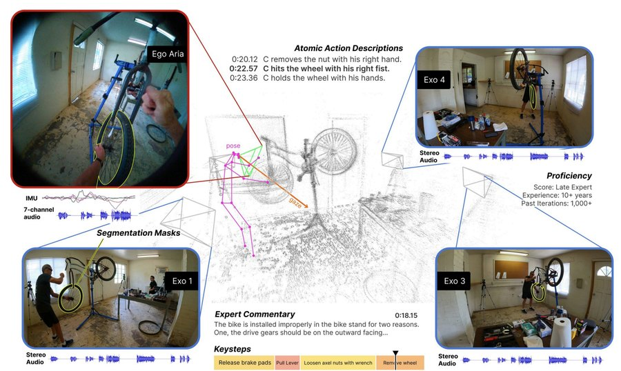
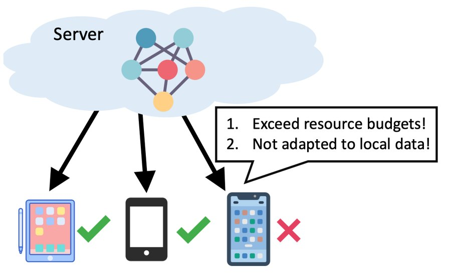
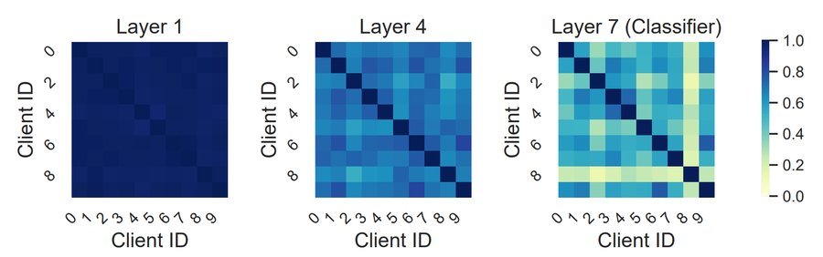
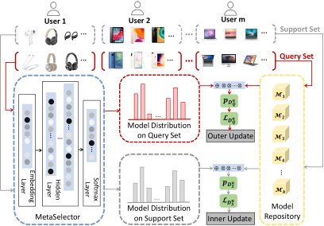
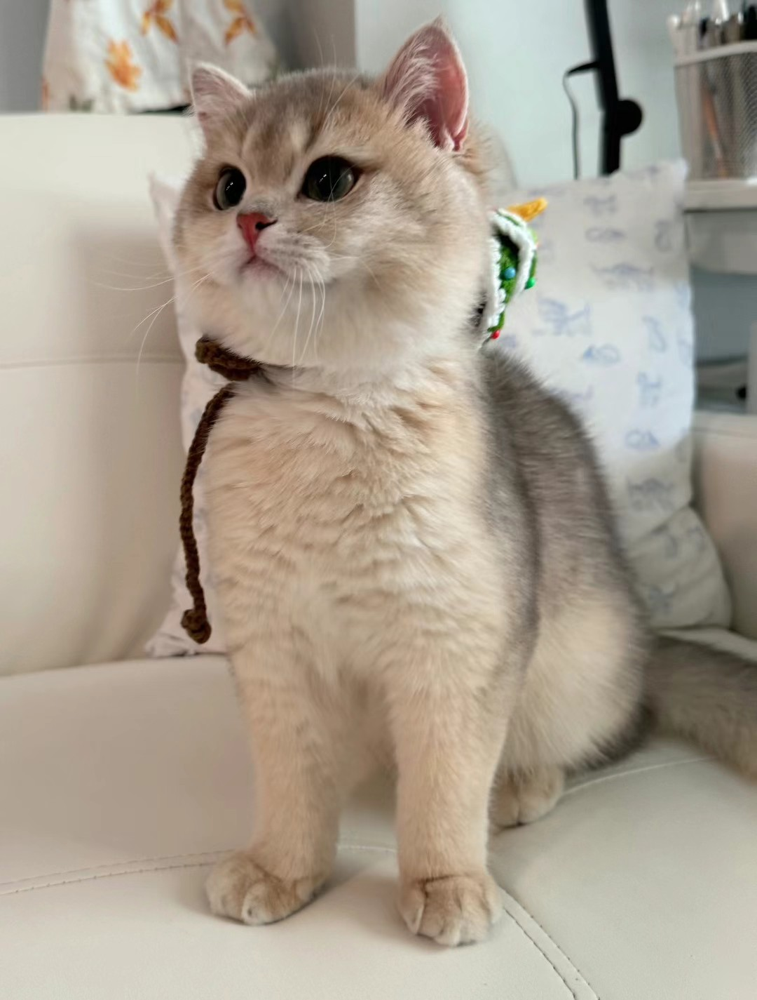

(Romy) Mi LUO
Hi there 👋! I am a fourth-year PhD student at UT Austin, co-advised by Prof. Kristen Grauman and Prof. Alex Dimakis.
I am currently a Student Researcher at Google DeepMind, working closely with Xuezhi Wang, Lijun Yu, Canoee Liu, and Adams Yu. Previously, I interned at Google, where I was fortunate to work with Du Tran, Wen-Sheng Chu, and Yujia Chen.
Before joining UT Austin, I worked with Jiashi Feng at the National University of Singapore. I obtained my bachelor's degree from Southeast University, Nanjing.
My research focuses on building multimodal generalist AI systems that understand, generate, and reason about continuous visual states, with broader interests in vision language models and world models.
News
- [Aug. 2026]Check out our recent work on visual latent reasoning and personalized visual context learning 📄.
- [Jul. 2026]LDO is accepted to ECCV 2026 🎉. See you in Malmö 🇸🇪!
- [May 2026]Started as a Student Researcher at Google DeepMind in Mountain View .
- [May 2026]Received the ICML 2026 Silver Reviewer Award 🥈.
- [Sep. 2025]Two papers accepted to NeurIPS 2025: AoT and Video-VER 🎉. See you in San Diego 🌴!
- [May 2025]Started as a Student Researcher at Google in Mountain View .
- [Feb. 2025]ViewpointRosetta is accepted to CVPR 2025 as an Oral 🎉. See you in Nashville 🎸!
- [Sep. 2024]Two papers accepted to NeurIPS 2024: HOI-Swap and EnsV 🎉. See you in Vancouver 🍁!
- [Jul. 2024]Two papers accepted to ECCV 2024: 4DIFF and Exo2Ego 🎉. See you in Milan 🇮🇹!
- [May 2024]Started a research internship at FAIR, Meta AI in Menlo Park .
- [Feb. 2024]Ego-Exo4D is accepted to CVPR 2024 as an Oral 🎉. See you in Seattle 🏔️!
Research Interests
My research develops the data and learning signals that enable generalist AI systems to learn from continuous visual experience, ground their decisions in the observable consequences of actions in the physical world, and ultimately improve themselves through interaction. Specifically:
- Human Video → Transferable Knowledge. I am interested in turning abundant human video into scalable training data for generalist agents. My work explores how paired and unpaired ego-exo video, multimodal demonstrations, and 3D geometry enable knowledge transfer across viewpoints and embodiments.
- World Models → Physical Intelligence. I am interested in world models that predict the physical consequences of actions, including contact, motion, object permanence, and causal direction. My work moves video models beyond visual realism toward prediction, decision-making, planning, and control.
- Visual Feedback → Self-Improving Agents. I am interested in agents that use visual feedback, long-term memory, and internal simulation to identify and learn from their failures. My work develops the grounding and memory mechanisms needed for agents to adapt to users and improve through continued interaction.
Publications & Manuscripts
* denotes equal contribution (co-first author).
-

Ego-Exo4D: Understanding Skilled Human Activity from First-and Third-Person Perspectives Kristen Grauman, Andrew Westbury, Lorenzo Torresani, Kris Kitani, Jitendra Malik, …, Mi Luo, …, Pablo Arbelaez, Gedas Bertasius, David Crandall, Dima Damen, Jakob Engel, Giovanni Maria Farinella, Antonino Furnari, Bernard Ghanem, Judy Hoffman, C. V. Jawahar, Richard Newcombe, Hyun Soo Park, James M. Rehg, Yoichi Sato, Manolis Savva, Jianbo Shi, Mike Zheng Shou, Michael Wray
In IEEE/CVF Conference on Computer Vision and Pattern Recognition, CVPR 2024. (Oral)
[PDF][Project][Overview][Video]
-

Architecture Personalization in Resource-constrained Federated Learning Mi Luo, Fei Chen, Zhenguo Li, Jiashi Feng
In NFFL Workshop, NeurIPS 2021. (Selected as outstanding paper, acceptance rate: 9%)
[PDF]
-

No Fear of Heterogeneity: Classifier Calibration for Federated Learning with Non-IID Data Mi Luo, Fei Chen, Dapeng Hu, Yifan Zhang, Jian Liang, Jiashi Feng
In Advances in Neural Information Processing Systems, NeurIPS 2021.
[PDF]
-

MetaSelector: Meta-Learning for Recommendation with User-Level Adaptive Model Selection Mi Luo, Fei Chen, Pengxiang Cheng, Zhenhua Dong, Xiuqiang He, Jiashi Feng, Zhenguo Li
In Proceedings of The Web Conference, WWW 2020.
[PDF]
Research Experiences
- Google DeepMind
Student Researcher, Topics: Gemini-Omni evaluation, video reasoning, world models
- Google
Student Researcher, Topics: video world models
- FAIR, Meta AI
Research Intern, Topics: video encoder and representation learning
- SEA AI Lab (SAIL)
Research Intern, Topic: vision transformer architecture
- National University of Singapore
Research Assistant, Topics: federated learning, machine learning with non-IID data
 National University of Singapore
National University of SingaporeProfessional Service
- Conference Reviewer
- IEEE/CVF Conference on Computer Vision and Pattern Recognition (CVPR), since 2023
- European Conference on Computer Vision (ECCV), since 2024
- IEEE/CVF International Conference on Computer Vision (ICCV), since 2023
- Asian Conference on Computer Vision (ACCV), since 2024
- Conference on Neural Information Processing Systems (NeurIPS), since 2023
- International Conference on Learning Representations (ICLR), since 2024
- International Conference on Machine Learning (ICML), since 2024
- International Conference on Artificial Intelligence and Statistics (AISTATS), since 2022
- AAAI Conference on Artificial Intelligence (AAAI), since 2025
- Journal Reviewer
- International Journal of Computer Vision (IJCV)
- IEEE Transactions on Knowledge and Data Engineering (TKDE)
- Transactions on Machine Learning Research (TMLR)
- Teaching Assistant
- EE2211 Introduction to Machine Learning
- CG3207 Computer Architecture
Personal
- Outside of research, I'm usually out with a camera 📷 or being supervised by my cats, Kiwi and Wiki 🐈.

Built with 🧑💻 + AI 🤖 with ❤️
Typography adapted from the clarity template.